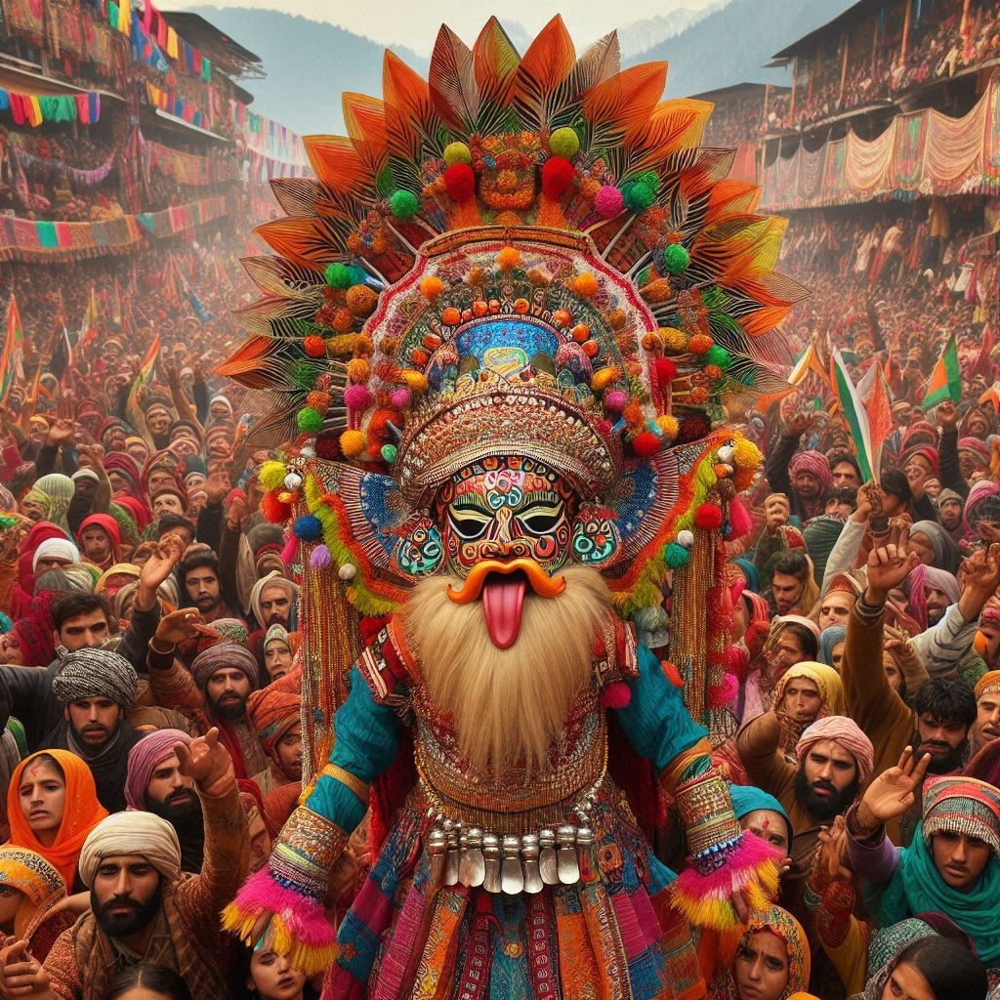
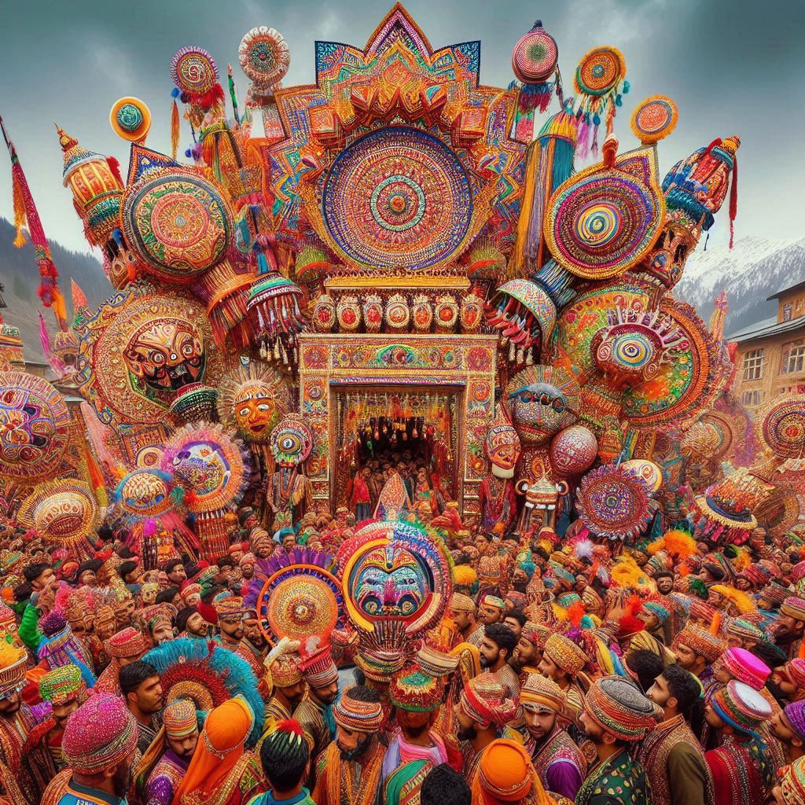

The festivals of Jammu and Kashmir reflect its rich cultural heritage, religious diversity, and deep-rooted traditions. Each festival is celebrated with unique customs, music, dance, and food, reflecting the distinct identity of its communities. Here is an overview of some prominent festivals celebrated across the region:
1. Eid-ul-Fitr and Eid-ul-Adha
- Celebrated by: Muslims
- Significance: These are major Islamic festivals. *Eid-ul-Fitr* marks the end of the holy month of Ramadan, a period of fasting, while *Eid-ul-Adha* commemorates the willingness of Prophet Ibrahim to sacrifice his son in obedience to God’s command.
- Celebrations: People attend special prayers at mosques, give charity (zakat and fitrana), feast with family and friends, and wear new clothes. Traditional delicacies such as *wazwan*, *kehwa*, and various sweets are prepared.
2. Navratri and Dussehra
- Celebrated by: Hindus, mainly in the Jammu region
- Significance: Navratri is a nine-day festival dedicated to the worship of the Goddess Durga, culminating in Dussehra, symbolizing the victory of good over evil as Lord Rama defeated Ravana.
- Celebrations: Devotees observe fasting, engage in prayers, and perform traditional dances. In Jammu, the Dussehra festival is marked by large effigies of Ravana being burned, accompanied by dramatic enactments of scenes from the Ramayana.
3. Lohri and Baisakhi
- Celebrated by: Hindus and Sikhs
- Significance: *Lohri* marks the end of winter and is celebrated to welcome longer days and the harvest season. *Baisakhi* signifies the harvesting of the Rabi crop and is also a religious festival for Sikhs, marking the establishment of the Khalsa Panth by Guru Gobind Singh.
- Celebrations: People light bonfires, perform folk dances like *Bhangra* and *Gidda*, sing traditional songs, and share sweets. Temples and gurudwaras hold special prayers and processions.
4. Urs Festival
- Celebrated by: Muslims
- Significance: The *Urs* festival marks the death anniversary of Sufi saints and is observed with devotion and prayers at their shrines. The Urs of *Hazrat Sheikh Noor-ud-din Noorani* (Nund Reshi) and *Hazrat Bulbul Shah* are particularly significant.
- Celebrations: Devotees gather at the shrines for prayers, Qawwali (devotional singing), and communal meals, seeking blessings and spiritual peace.
5. Hemis Festival
- Celebrated by: Buddhists in Ladakh
- Significance: Dedicated to Guru Padmasambhava (the founder of Tantric Buddhism in Tibet), this festival is observed in the Hemis Monastery.
- Celebrations: Colorful masked dances (Cham) are performed by monks, depicting the victory of good over evil. The festivities include traditional music, vibrant costumes, and religious rituals.


6. Shivratri (Herath)
- Celebrated by: Kashmiri Pandits
- Significance: Known as *Herath* among Kashmiri Hindus, Shivratri marks the wedding of Lord Shiva and Goddess Parvati.
- Celebrations: It is celebrated with fasting, prayers, and rituals performed around a sacred water pot representing Lord Shiva. The festival often involves elaborate family feasts.
7. Buddha Purnima
- Celebrated by: Buddhists in Ladakh
- Significance: This festival commemorates the birth, enlightenment, and death of Lord Buddha.
- Celebrations: Devotees offer prayers at monasteries, chant scriptures, and light lamps. Processions and sermons are held, and monks perform religious rites.
8. Amarnath Yatra
- Celebrated by: Hindus
- Significance: It is an annual pilgrimage to the sacred Amarnath Cave, where a naturally occurring ice *Shivlinga* is worshipped by devotees of Lord Shiva.
- Celebrations: Pilgrims from across the country undertake the arduous trek to the cave amid chanting of religious hymns, symbolizing faith and endurance.
9. Ladakh Harvest Festival
- Celebrated by: People of Ladakh
- Significance: This festival celebrates the harvesting season and showcases the unique cultural heritage of Ladakh.
- Celebrations: The festival includes traditional music, dance, food, and sports such as archery. Mask dances by Lamas in monasteries are a highlight, reflecting Ladakh's Buddhist heritage.
10. Mela Patt
- Celebrated by: Hindus in Bhaderwah (Jammu region)
- Significance: The festival is dedicated to Lord Vasuki Nag, the presiding deity of the region.
- Celebrations: It involves a procession, traditional dances, music, and offerings at the temple. It is a celebration of faith and community unity.
11. Eid-e-Milad-un-Nabi
- Celebrated by: Muslims
- Significance: This festival marks the birth of Prophet Muhammad.
- Celebrations: People participate in night prayers, sermons on the life of the Prophet, and processions. Homes and mosques are decorated, and charity is given to the poor.
The festivals of Jammu and Kashmir highlight the region's cultural richness, religious harmony, and centuries-old traditions, offering a glimpse into the life and beliefs of its diverse communities.